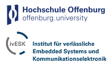

About us
Hahn-Schickard-Gesellschaft für angewandte Forschung e.V. :
We develop intelligent products for you with microsystem technology: from first conception to production.
Working in close partnership with the industry, Hahn-Schickard provides innovative products and technologies in the areas of sensors and actuators, system integration, cyber-physical systems, communication technology, software development, lab-on-a-chip and analytics, microelectronics, mounting and connection technology, micromounting, and reliability. Our services include the production of small and medium-sized series, as well as the transition to mass production.SSO Department and AE Group:
Hier kommt Beschreibung SSO Department and AE Group rein
STAG Development Group members:
Partners:
 The FZI Research Centre for Information Technology at the Karlsruhe Institute of Technology is a non-profit institution for application research and technology transfer in the field of information technology. It brings the latest scientific findings in information technology to companies and public institutions and qualifies young people for academic and business careers or the leap into self-employment. In the field of information technology, the FZI is the innovation hub in Baden-Württemberg.
The FZI Research Centre for Information Technology at the Karlsruhe Institute of Technology is a non-profit institution for application research and technology transfer in the field of information technology. It brings the latest scientific findings in information technology to companies and public institutions and qualifies young people for academic and business careers or the leap into self-employment. In the field of information technology, the FZI is the innovation hub in Baden-Württemberg.

The Offenburg University of Applied Sciences is one of the leading technical universities in Central Baden. More than 4,500 students are enrolled in the study areas of technology, business and media. The team at the Institute Embedded Systems and Communication Electronics (iESK), headed by Prof. Sikora, currently includes ten full-time engineers and doctoral students. These are supported by about fifteen students. Extensive know-how is available for communication solutions and their implementation in embedded systems.
The research area Software Engineering (SE) examines research questions and the development of complex software systems holistically. Holistic here means the engineering analysis, development and evolution of complex multi-platform software systems, taking into account high quality standards.